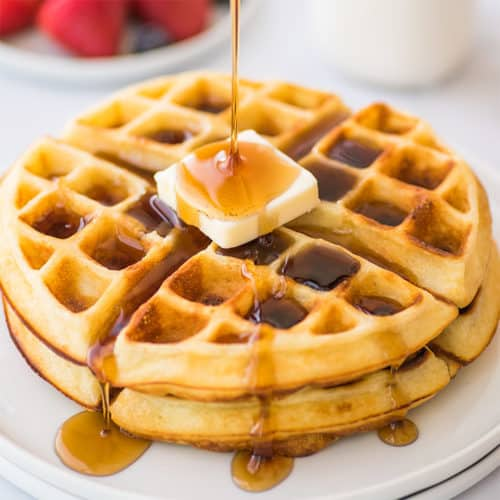

Waffles

Waffles are another delicious treat for breakfast. Whether you square or circle waffle maker, you are still getting an amazing breakfast item. Keep reading for more information on how to make this delicious breakfast food.
Ingredients and Items
- 2 eggs
- 2 cups all-purpose flour
- 1 3/4 cups milk
- 1/2 cup vegetable oil
- 1 tablespoon white sugar
- 4 teaspoons baking powder
- 1/4 teaspoon salt
- 1/2 teaspoon vanilla extract
- Large mixing bowl
- Waffle iron
Directions
- Preheat waffle iron.
- Beat eggs in a large bowl until fluffy. Add flour, milk, vegetable oil, sugar, baking powder, salt, and vanilla until smooth.
- Spray the waffle iron with a non-stick cooking spray.
- Pour mix onto hot waffle iron. Cook until golden brown and serve hot.
Click here for the full recipe!
Return to the Main Page